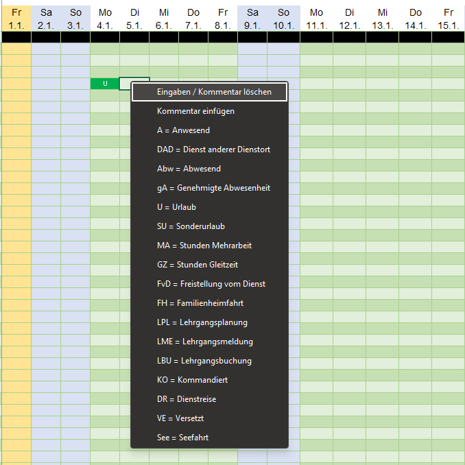
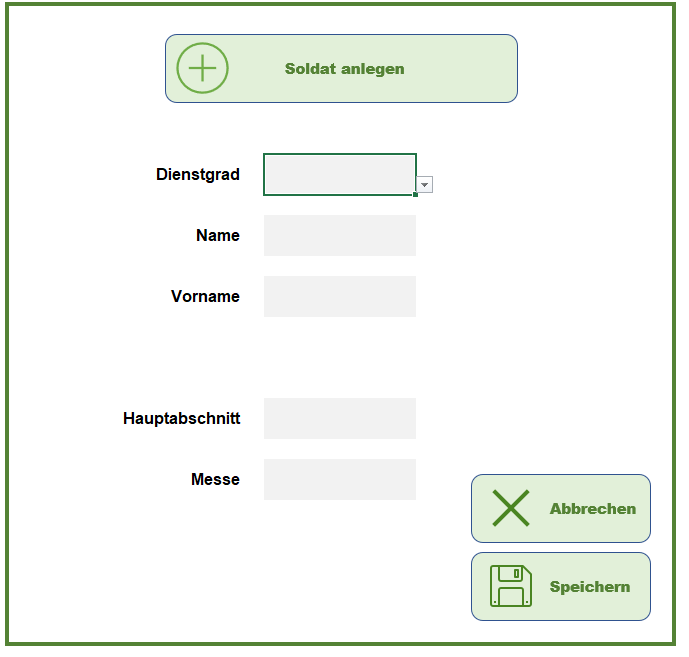

Anwesenheitsliste
Ausgangssituation
Ich wollte eine einfache und übersichtliche Möglichkeit schaffen, um die Anwesenheit mehrerer Personen über verschiedene Tage hinweg zu erfassen und Änderungen schnell nachvollziehen zu können.
Umsetzung
Dafür habe ich die Anwendung mit Excel und VBA umgesetzt und verschiedene Abläufe automatisiert. Besonders wichtig war mir, die Bedienung möglichst einfach zu halten und gleichzeitig die zugrunde liegenden Daten strukturiert abzubilden.
Dazu habe ich unter anderem das Kontextmenü angepasst und eigene Funktionen für die Erfassung und Bearbeitung der Daten entwickelt.
Screenshots



Technologien
- Excel
- VBA
Was ich dabei gelernt habe
- Automatisierung von Excel
- Arbeiten mit VBA, auch im Bezug auf Kontextmenüs
- Strukturierung von Daten